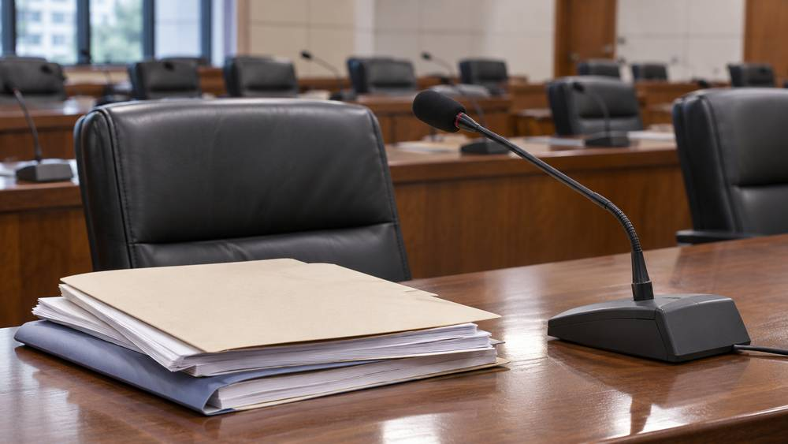
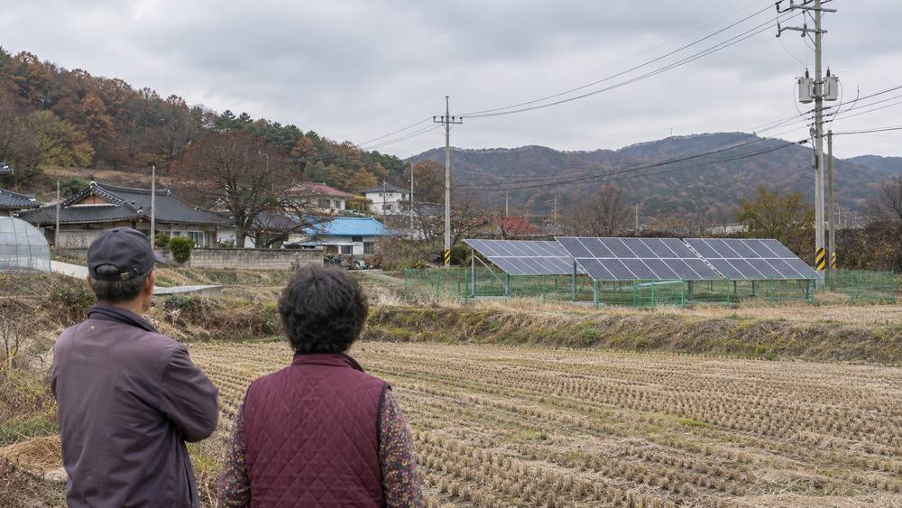

정치
미래대응기금 지방 몫, 교부세 산식 배분 두고 쟁점
경기도는 불교부단체라 빠질 수 있다며 성장기여도 반영과 8,750억 원 추산을 내놨다. 행정안전부는 일부를 일반재원으로 교부한다고 설명해 왔다.
시민안전보험 15세 미만 사망보장, 상법 개정 국회 논의
국무총리비서실이 11월 19일 국회 간담회를 열었다. 힌남노 때 숨진 14세 중학생과 12·29 여객기 참사 15세 미만 희생자 8명이 보장에서 빠졌다.

산중위 예산안 의결 두 번째 연기…미래대응기금 지방교부세 산정 방식 쟁점으로
국민의힘 중복 편성·기금 소멸 뒤 대책 질의 / 더불어민주당 국가채무비율 들어 반박…법정 시한 12월 2일


철원·화천 군의원, 접경지역 정책포럼서 영농형 태양광 군민펀드 제안
철원 농지 약 60% 외지인 소유 우려…화천은 군 유휴 추정부지 약 1,087만㎡ 활용 특례 확대 제안


미래대응기금 8개 사업 4조3,472억 원, 신규·계속 분류 갈려…예산안 처리 시한 12월 2일
청년일자리도약장려금 9,012억 원 중 70.1%는 이미 채용된 청년 몫 / 기획예산처 신규 79개·계속 51개

진보당, 세계태양광총회 앞두고 원전 재가동 중단 요구…기후변화대응지수 한국 61위
지수는 64개국과 유럽연합 평가, 한국은 지난해보다 두 계단 올라…총회는 11월 15일부터 20일까지 대전서 열려

체코 원전 시공사 교체 두고 국회서 청문회 요구…새 시공사는 2027년 7월 선정 목표
국민의힘 특정 업체 의혹 제기 / 민주당 계약 조건 변경 논란 지적…청문회 개최 여부 미정

과기정통부 예산 1조 3,000억 원 넘게 증액…핵융합 228억 원 늘려
출연연 인건비 1,186억 9,700만 원 반영 / 예산결산특별위원회 심사 뒤 확정, 법정 처리시한 12월 2일


서울시의회 오중석 의원, SH 임대단지 태양광 요금상계 현황 공개 요구
LH는 세종 행복주택 238가구에서 요금상계를 시작했고 SH 고덕 온빛채 697가구는 제로에너지건축물 3등급 단지다

햇빛소득마을 1·2차 선정 522곳 중 490곳이 조건부, 국회 예산 심사에서 실효성 쟁점으로
행안부 발표 기준 조건부는 1차 77곳·2차 413곳, 임호선 의원은 내년 2,200곳 확대 계획에 예산은 이차보전 285억 원 중심이라고 지적

송·변전사업 104건 중 기한 내 준공 19건…주민 지원 늘리는 시행령 개정안 12월 1일까지 입법예고
국회 토론회서 은재호 교수 적시성·절차적 정당성·공간적 정의 충돌 짚어…정부 개정안은 지원금 3분의 2를 주변 마을에 배분